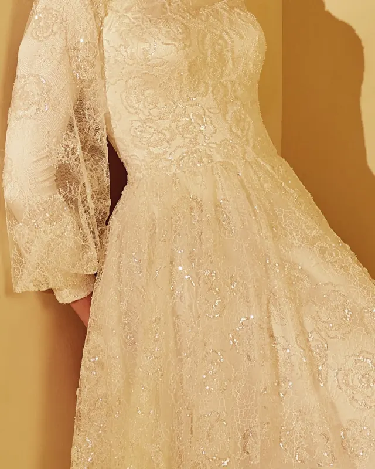

Lavinya
Kupon dantelin kusursuzluğuyla hayat bulan, zamansız bir gelinlik.
- Satın alma
- Kiralama
- Randevu ile

Dantelin hikâyesi
Kupon dantel, haute couture dünyasında nadir bulunan, belirli bir kalıp ya da simetri üzerine doğrudan dokunan, el işçiliği detaylar taşıyan en özel dantel türlerinden biridir.
Metreyle satılan dantelden farklı olarak her motif tam olması gereken yere, siluetin en zarif noktasına oturacak biçimde tasarlanır.


Lavinya'yı deneyin
Prova randevusu
- WhatsApp'tan yazın, Lavinya'yı sorun
- Gün ve saati birlikte seçelim
- Dragos'taki atölyede deneyin
Satın alma ya da kiralama seçeneğiyle